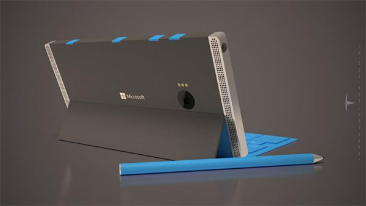

เรียกได้ว่ายังคงมีการอัปเดตข่าวคราวเกี่ยวกับ Microsoft Surface Phone วินโดวส์โฟนตัวท็อปรุ่นต่อไปจากค่าย Microsoft ออกมาให้ได้ทราบกันอย่างต่อเนื่อง โดยล่าสุดได้มีการเผยแพร่ภาพคอนเซ็ปต์การดีไซน์ตัวเครื่องแบบใหม่ล่าสุดออกมาให้ได้ชมกันเพิ่มเติมแล้ว
นายสืบวงศ์ แก้วสีดำ ปวส.2/1 เลขที่ 25